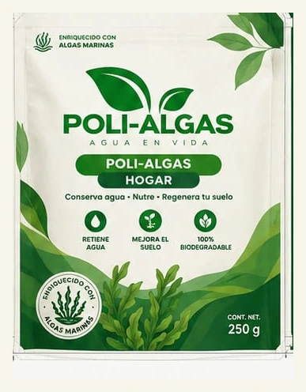
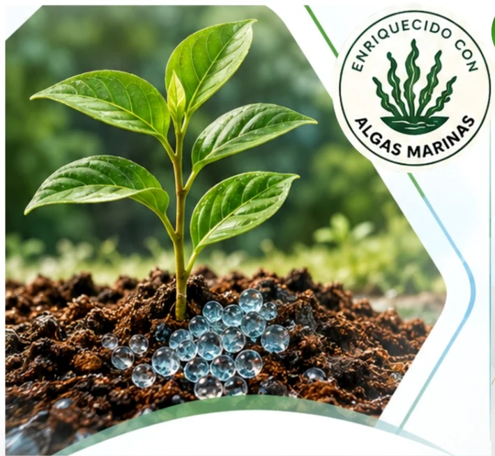

Conserva humedad
Ayuda a prolongar la disponibilidad de agua entre riegos.
Hidrogel biodegradable con algas marinas
POLI-ALGAS retiene humedad cerca de la raíz y la libera gradualmente para ayudarte a cuidar cada gota, nutrir tus plantas y regenerar el suelo.
*Capacidad reportada del producto; el desempeño varía según suelo, sales y condiciones de uso.


Tecnología natural para el suelo
Su matriz hidroabsorbente capta agua del riego o la lluvia, se expande en la zona de raíces y la entrega de manera gradual conforme el suelo pierde humedad.
Ayuda a prolongar la disponibilidad de agua entre riegos.
Incorpora extractos de algas, minerales y compuestos bioactivos.
Diseñado para aplicarse sin infraestructura compleja.
Beneficios
Una solución pensada para el cuidado cotidiano de plantas, viveros y proyectos productivos.
Almacena agua y la mantiene disponible cerca de la raíz.
Ayuda a amortiguar periodos entre riegos y altas temperaturas.
Su formulación con algas busca favorecer la actividad del suelo.
Integra biomateriales para una aplicación agrícola responsable.
Aplicación sencilla
Incorpóralo en la zona de raíces para que pueda hidratarse y trabajar dentro del suelo.
Afloja la tierra y verifica que la maceta tenga buen drenaje.
Mezcla la dosis calculada alrededor de la zona de raíces.
Riega de forma gradual para hidratar el producto sin saturar.
Comprueba la humedad antes de cada nuevo riego.
Evidencia preliminar
En una prueba piloto controlada de 14 días se compararon cinco macetas con POLI-ALGAS y cinco macetas sin producto, usando el mismo suelo, exposición solar y volumen inicial de riego.
Ver metodología →frente a 28% en el grupo control
frente a 4 en el grupo control
frente a 12 cm sin producto
resultado preliminar respecto al control
Un producto, distintos entornos
Macetas, ornamentales y huertos urbanos.
Producción y cuidado de plantas en contenedor.
Pequeños y medianos productores en zonas con estrés hídrico.
Proyectos de establecimiento vegetal y restauración ambiental.
Dosis orientativa
Ingresa el consumo de agua de tu planta y obtén un rango inicial, capacidad de retención y recordatorios para evitar la saturación.
Hablemos
Cuéntanos qué cultivas, cuánta superficie manejas y cuál es tu reto de agua. Te ayudamos a encontrar el siguiente paso.